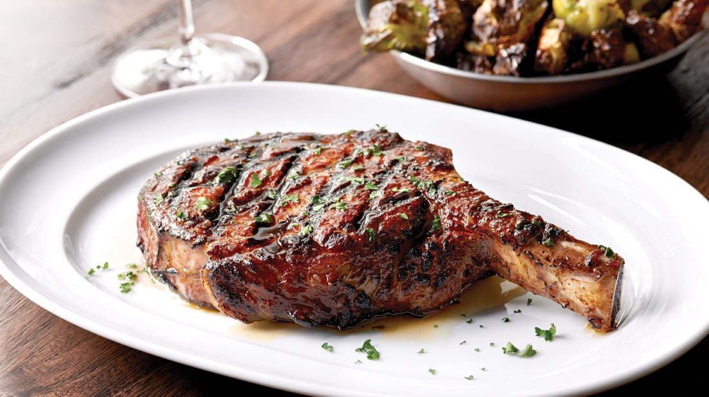

Steak

The Bone In Ribeye steak is a wonderful juicy cut that will be baked in the oven (or air fryer) and then seared to perfection.
The recipe will be a precombined Kinders seasoning.
This method has the abiltiy to be cooked in most kitchens. One extra tool will likely need to be purcashed but it is worth the small investment. The steak is baked in the oven and then seared in a pan on the stovetop with a meat press. Lastly, the steak rests for a few minutes to allow the middle to cook a little longer without overcooking the steak.
Ingredients
- 16oz Bone In Ribeye
- Kinders Salt, Pepper, Garlic Salt mix
- 1tbsp olive oil
- Frying Pan
- Meat Press
Steps
- Preheat oven or air fryer to 400 degrees
- Season both sides of the steak using Kinders seasoning
- When preheated, add the steak to the baking device for 12 for 1 and 1/4 inches, 10 minutes for 1 inch thick, 8 for 3/4, and 6 for 1/2.
- When there is 3 minutes left, turn on the stovetop with the fryer pan on the burner.
- When there is 1:30 left, add olive oil to the frying pan
- When the steak is finished baking, transfer steak to frying pan and place the meat press on top of the steak
- After two minutes, flip the steak
- After another two minutes, remove the meat press and transfer the steak to a plate to rest for 5 minutes
- Serve
Home